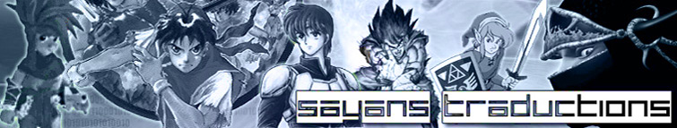
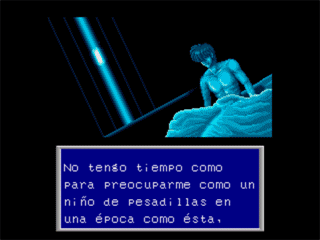
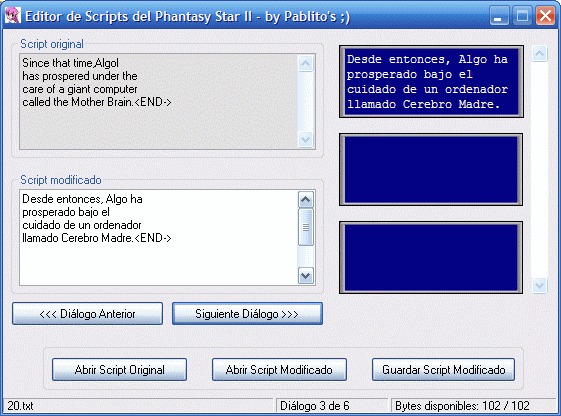
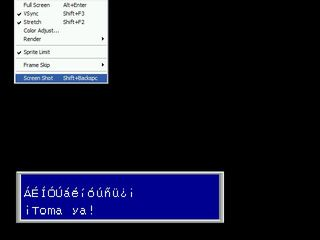
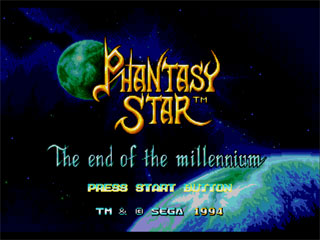

© Copyright Sayans Traductions 1999-2005. Optimizado para resolución de 800x600, también se ve bien a 1024x768 (mi resolución). No debe haber incompatibilidades con otro navegador. Webmaster: Pablito's (y Rocky xD)

|
Noticias Traducciones Documentos Utilidades Guías Música Enlaces Foro Staff Noticias Ant. Afiliados |
10-03-2008 |
Retiro oficial [ Pablito's ] |
Después de casi dos años más tarde, y tras una actualización cuyo título reza que no actualizaba después de casi un año, creo oportuno que la primera noticia que se pueda leer en Sayans Traductions es que el grupo está, triste y desgraciadamente, muerto. Ojalá tuviera ganas y tiempo suficiente para seguir traduciendo videojuegos por afición como he hecho durante tantos años. Ojalá pudiera vivir de traducir videojuegos con toda la ilusión del mundo. Sin embargo, la realidad es que llevo ya unos 8 meses traduciendo profesionalmente en una empresa de traducción del inglés al español y que no me deja tiempo para seguir con el romhacking. He intentado contribuir lo máximo posible con el romhacking con mi manual de traducción de videojuegos, cuya versión definitiva se puede descargar y solicitar una copia impresa desde Lulu. Ahora pongo a disposición de todos la traducción que hice de los scripts del Suikoden junto con el editor que programé para facilitar la tarea de mediación. También pongo todo lo relacionado con el Chrono Cross (espero que a Ereza y uZiel no le importe, supongo que no) que tengo. La verdad es que no sé qué más decir en este momento. Si alguien quiere seguirme la pista, escribo en un blog sobre traducción profesional llamado Algo más que traducir. Quien quiera estar al tanto de las novedades sobre el romhacking, que visite la Fortaleza Romhack y su foro que, aunque apenas participo, lo visito asiduamente. Ojalá pueda participar en algún proyecto más adelante relacionado con el romhacking, de verdad. De momento ya he publicado dos artículos sobre el tema en revistas de traducción especializadas (Romhacking: localización de videojuegos clásicos en un contexto de aficionados y En torno a la localización de videojuegos clásicos mediante técnicas de romhacking: particularidades, calidad y aspectos legales), y quién sabe lo que me depara el futuro. Nada más por ahora. Hasta pronto y gracias a todos por haber estado y estar ahí. |
|
03-08-2006
|
¡Una actualización después de casi un año! [ Pablito's
]
|
| No, no estoy muerto si eso pensabais. Mala hierba nunca muere, lo siento xD Mucho ha pasado desde la última actualización, aunque más a nivel personal que profesional (entendido como proyectos de romhacking, claro está): estudios, viajes, problemas, mujeres... Pero bueno, aquí será mejor escribir sobre cosas relacionadas con el romhacking, ¿no? :P En primer lugar, he decidido retomar lo poco (y mira que era poco de verdad) que me quedaba para terminar la retraducción del Phantasy Star II. Ya lo decía el título de la noticia anterior: parche para el Phantasy Star casi listo. Pensaba retomarlo a más tardar en Navidad, pero al final lo he dejado pasar tanto tiempo que ha sido ahora cuando lo he acabado. No hay mucho que contar acerca de las novedades, ya que, tal y como comenté en su momento, se trata de una retraducción desde cero de la ROM original americana ya parcheada con un parche que mejoraba la traducción (algo que me dio ciertos quebraderos de cabeza en su problema por no tratarse de un buen trabajo de romhacking). Por supuesto, ahora sí que hay acentos, ñ y demás ;) Podéis descargar el parche más abajo. ¡Espero que no dé problemas como suele ocurrir! En segundo lugar, ¿recordáis aquel documento que publiqué en inglés sobre los fansubs? Pues resulta que trabaje más en él y, junto a un profesor de una universidad de Londres, ha sido publicado en una revista internacional de traducción especializada :) El enlace a la revista es el siguiente: http://www.jostrans.org/. El artículo en cuestión lo podéis descargar en PDF en http://www.jostrans.org/issue06/art_diaz_munoz.pdf. Me he interesado mucho por la investigación en traducción este último año, y de hecho he escrito ya otros artículos que a ver si tengo suerte y los publico. Uno trata de los útiles de los que ha de servirse un traductor en esta era tecnológica (el artículo es más informativo que otra cosa) y el otro versa sobre el romhacking. Envié una versión anterior a otra revista electrónica de traducción, aunque fue rechazado :( No obstante, lo he mejorado todo este tiempo y la verdad es que ahora es bastante diferente. Hay que recordar que hay que dirigirse a académicos y eso requiere seguir una serie de pautas un poco coñazo, aunque claro, es normal que una persona que no sabe nada del tema necesite toda la información posible para llegar a la misma conclusión que yo :P Os mantendré informados en caso de que haya suerte con algún artículo. También he trabajado en la Bibliografía para estudiantes de Traducción e Interpretación, aunque aún me quedan cosas por añadir que no sé cuándo haré, ya que en esta nueva versión de la bibliografía aparece una breve reseña sobre cada referencia bibliográfica. Además, el formato es más agradable a la vista, ya lo veréis algún día, o eso espero xD He aprendio que es mejor esperar y sacar a la luz un trabajo bien hecho y no tener tanta ansia como siempre la he tenido con estas cosas... Por último quería deciros que, ahora que he terminado lo poco que tenía pendiente por hacer, no sé si voy a traducir más juegos como he ido haciendo desde que empecé allá por 1999 (¡Dios, cómo pasa el tiempo!). Si todo va bien, el año que viene acabaré la carrera y será momento de cobrar por las traducciones profesionales que haga. Este verano he tenido mucho tiempo libre, pero la verdad es que después de pasarme el curso entero traduciendo tengo ganas de descansar, que bastante he traducido ya. De todos modos, ya sabéis que siempre rondo por aquí, y hasta que no haya nadie en la escena siempre echaré un vistazo de vez en cuando por la "escena". El romhacking ha marcado mi vida, y es posible que me ayude en ella en cuanto al mundo laboral se refiere. Nada será ya como antes, cuando estaba realmente motivado por esto. El tiempo pasa y la cosas cambian, todos dejamos de ser niños alguna vez... En fin, ya paro, que me pongo triste xD Espero escribir en el futuro documentación sobre el romhacking o algo relacionado aunque sea. De momento, me complace saber que el manual de romhacking que escribí el verano pasado (Manual de traducción de videojuegos: el fascinante mundo del ROM Hacking) ha servido a varias personas para que se inicien en este maravilloso mundo de la traducción de esos videojuegos antiguos que a todos nos marcaron en su día. De hecho, tal ha sido el éxito cosechado que hasta ha sido traducido al portugués por RiFF y revisado por Fallen_Out, algo que realmente me emocionó en su momento. Podéis descargarlo aquí: Manual de tradução de Jogos: O fascinante mundo do ROMHacking. Pues de momento eso es todo, espero que no se me olvide nada (seguro que sí xD). ¡Hasta la próxima actualización (Dios sabe cuándo será xD)! |
|
01-10-2005
|
Parche para el Phantasy Star casi listo [ Pablito's
]
|
| Y es que, aunque queda prácticamente nada por hacer, prefiero esperar a que KaOSoFt termine de betatestear la traducción y me diga las erratas que tiene. Además, Vegetal Gibber
(intentaré responderte cuando pueda a tu último correo,
mañana me voy ya a Granada y tengo la mitad de la maleta hecha a
las 3 de la mañana xD) me ha ayudado enormemente a última
hora no sólo a corregir aquel bug serio del que os hablaba en la
última actualización, sino a "reventar" como él
dice la compresión de gráficos del Phantasy Star II.
Gracias a esto puedo traducir algunos gráficos que quedaban por
traducir, pero claro, tengo que esperar a que KaOSoFt me envíe
algún Save State para ver con mis propios ojos los cambios que
hago :P En resumen, que podría sacar el parche ahora mismo (ya
me di cuenta hace unos días que Septiembre tiene 30 días
y no 31 xD) pero visto que puedo sacar una versión más
pulida aún prefiero esperar un poco más. Es cierto que
voy a estar liado con la Universidad y que no dispongo de momento de
Internet en el piso donde voy a vivir ahora como estudiante, pero todo
se andará. No os preocupéis que yo soy el primero que
quiere sacar el parche y sentirse "libre" ;) Ah, mientras tanto, os dejo con este documento que hice el otro día, quizás le interese a alguien: Bibliografía para estudiantes de Traducción e Interpretación. |
|
21-09-2005
|
Preparando el parche definitivo [ Pablito's
]
|
| Bien, hace dos días acabé de testear la traducción (he corregido bastantes cosas además de un fallo grave que impedía avanzar en el juego) y hoy mismo le he enviado el parche a KaOSoFt para que él testee la versión "casi definitiva" de la traducción. Si no se lo mandé antes es porque la traducción tiene un bug importante al final del juego debido a los cambios que Meradrin hizo en la rutina que carga la fuente del juego. Ya me he puesto en contacto con él y me ha dicho que lo mirará cuando pueda, que espero que sea pronto para poder sacar el parche antes del 31 como prometí :) Desde aquí quiero agradecerle una vez más a Meradrin toda la ayuda que me ha ofrecido, ya que sin la inserción de acentos esta retraducción no habría sido posible. En fin, estad atentos, a ver si la próxima sí que publico el parche de verdad :) |
|
13-09-2005
|
...y empieza el testeo [ Pablito's
]
|
| Nada más y nada menos
que dos día tardé para "reventarme" el script del juego
entero xD Qué dos tardes me tiré, pero creo que
mereció la pena ;) Si me he demorado tanto en empezar a testear
es porque no hay nada peor que usar un parche que traduce retoca la
traducción original y no asumir sus posibles consecuencias
negativas, como que se ponga un código de fin de mensaje de
más que no afecta a la traducción pero que confunde al
editor de scripts que programé al calcular el número de
bytes que tiene cada mensaje (yo no lo veía porque está
programado para que sólo se vea un código de mensaje)..
Entre eso y que he recalculado a mano algunos punteros (curioso
formato, por cierto; cada puntero es normalmente
un byte cuyo valor es el total de caracteres que ocupa el mensaje) he
tardado más de un día en insertar los scripts con
éxito (esperemos que no ocurra una catástrofe
según juegue) y otro más en traducir los objetos,
menús y ese tipo de cosas secundarias. Aquí tenéis
unas imágenes del principio para que veáis cómo
luce la traducción :) 
De momento parece que la cosa va
viento en popa. Una vez acabe el vicio y corrija los posibles errores,
no sé si sacaré el parche o se lo mandaré a
KaOSoFt si tiene tiempo como para acabarlo antes del día 29 o
así ;) Estad atentos a la próxima actualización: o
bien actualizo para detallar algún "problemilla" de los que
suelo tener cuando testeo o bien actualizo con el parche :)
|
|
07-09-2005
|
Empieza la
retraducción del Phantasy Star II [ Pablito's
]
|
| Bueno chicos,
ahora que ya no tengo que estudiar ni hacer nada "importante" salvo
disfrutar de mi último mes de vacaciones, he adaptado el
editor de scripts del Suikoden para trabajar con scripts del Phantasy
Star II y comenzar por tanto la retraducción. Creo que me
dará algún que otro problemilla porque los
scripts que uso fueron alterados por otra persona para mejorar la
traducción inglesa y claro, he corregido algunos
códigos de final de mensaje pero seguramente me
habré equivocado en alguno. Por cierto, el juego usa hasta
tres códigos diferentes de fin de mensaje, por lo que tuve
que hacer un programilla para adaptarlos de forma que los pudiera leer
el editor de scripts sin problemasssuna
especie de buscar y reemplazar, vamos). Aunque en un principio dije que traduciría a partir de mi anterior traducción, creo que cambiaré más cosas de las que pensaba y además he visto que como cambié los códigos de final de mensaje, esto me traerá problemas a la hora de editarlos con el programa que he hecho. Como no hay demasiado texto, no me importa demasiado :) En fin, espero acabar, como dije, antes del 31. Ya veremos, ya ;) 
(Como veis, el
espacio disponible y el tamaño de las cajas de texto, que
normalmente sólo tienen dos líneas, se presentan
como un reto)
|
|
15-08-2005
|
Final Fantasy VI (PSX) 2.0 [ Pablito's
]
|
|
08-08-2005
|
¿? [ Pablito's
]
|
| Son las 5:30 de
la
mañana y gracias a la inestimable ayuda de meradrin he
conseguido dar un gran paso en la "retraducción" de... 
Ya sé
que falta la
Ñ mayúscula, se me ha olvidado, pero de verdad,
yo ya
sólo tengo ganas de irme a la cama de una vez por todas...
|
|
04-07-2005
|
Avanzando poco a poco [ Pablito's
]
|
| ACTUALIZACIÓN
15-07-2005: He decidido separar el manual de traducción de los documentos y programas. Ahora sólo hay que descargar 3 MBs y pico para poder leer el manual :) Podéis encontrar todo en la sección de documentos. Bueno, tras un tiempo sin actualizar, aquí estoy de nuevo. Tengo mucho tiempo libre gracias al verano, pero creo que es mejor aprovecharlo con los amigos :) No hay demasiado nuevo que contar con respecto a traducciones, más que nada porque he hecho más bien poco. No obstante, he estado muchos días escribiendo lo que presento a continuación: Manual de traducción de videojuegos: el fascinante mundo del ROM Hacking. Nada más y nada menos que 84 páginas (algunas en blanco, eso sí) en las que explico "casi" todo lo que he aprendido a lo largo los años como romhacker. Destaco los capítulos 8 y 9 que tratan sobre la traducción de juegos de PSX y los principios básicos del ASM respectivamente. Puede que no sea la forma más ortodoxa de explicar ASM pero espero que sirva de algo. El archivo ocupa unas 18 MBs porque se incluyen tanto los programas utilizados como los documentos recomendados. Por último, quiero mostrar mi agradecimiento a KaOSoFt por la exhaustiva revisión que ha hecho del documento. Por otro lado, acabo de terminar la localización al español del programa de sincronización de subtítulos llamado Sabbu, una alternativa de código abierto al Sub Station Alpha que funciona tanto en Windows y Linux. La nueva versión, que se espera para la semana que viene, contendrá el idioma al español. He decidido traducir algunos términos de la forma más apropiada en vez de por su sentido "literal". Así, "Start" (referido a los subtítulos) no es "inicio" sino "Entrada del subtítulo" porque así es como se le llama en traducción audiovisual. Para más información, visitad http://www.sabbu.com/. Ya sólo me queda dar las gracias a gi0 por haberme cedido un poco más de espacio web para subir el manual :) Asimismo, tan sólo he puesto las utilidades que se necesitan para parchear juegos junto con las que yo he programado en la sección de Utilidades. Además, la sección Tutoriales ha pasado a llamarse ahora Documentos (tengo que corregir el menú en las otras páginas, estoy muy vago para hacerlo ahora xD). |
|
23-05-2005
|
Por
fin una actualización [ Pablito's
]
|
| No
es que haya muchas novedades
precisamente pero algo nuevo hay :P La primera novedad es que he hecho lo que debí de hacer hace ya mucho tiempo quizás, ya que se lo envié a toda la gente interesada en ello. ¿Que de qué hablo? Nada más y nada menos de liberar el editor del Suikoden (y el código fuente bajo licencia GPL) del Suikoden. No creo que tenga demasiada utilidad al estar hecho específicamente para los scripts del Suikoden, si bien es cierto que el formato de éstos es el utilizado por el programa Translhextion. Lo que que sí que creo que puede servir de utilidad es el código fuente, que por cierto está escrito en Visual Basic (la versión 6.0 concretamente). Aquí lo tenéis. Lo segundo es que se respira por la escena un espíritu de equipo que espero que continúe. El año pasado ya se intentó traducir en grupo el Final Fantasy Mystic Quest de SNES sin demasiado éxito, pero espero que este nuevo espíritu abra un nuevo camino. Estad atentos a los foros de Todotradus (hace ya que volvieron pero ni me molesté en actualizar para decirlo :P). Lo tercero es que durante este semestre (o cuatrimestre si hubiese estado en España) he tenido que hacer un trabajo de investigación por así decirlo de unas 12 páginas excluyendo notas y bibliografía sobre los fansubs. Me habría gustado haberlo hecho del romhacking y del fansub a la vez pero no pudo ser porque este trabajo tenía como base una presentación que hice en clase con una compañera sobre traducción audiovisual. Podéis descargar el documento en PDF aquí. Por otro lado, yo ya he acabado el curso académico así que gozo de tiempo libre :) Tras estar un curso entero en Irlanda, donde creo que he aprendido bastante (no sólo inglés, sino de la vida), quiero pasar mucho tiempo con mis amigos este verano y pasarme algunos juegos, pero seguro que saco algo de tiempo para el romhacking ;) Podría ponerme con el Suikoden pero ahora mismo no me siento con ganas de ponerme, veremos al final qué pasa. He pensado en retraducir el Phantasy Star II de nuevo gracias a la ayuda de Rodolfo, un romhacker portugués que ha conseguido descomprimir la fuente que utiliza este juego (uno de los motivos por los que no he retraducido este juego ya es que quería usar acentos y demás). A ver en qué queda la cosa, ya os contaré. En fin, eso es todo por el momento. Aquí seguiré aunque pasen otros 5 meses sin actualizar xD |
|
06-01-2005
|
Feliz
año nuevo, feliz reyes y
feliz... [ Pablito's
]
|
|
...Phantasy Star IV de nuevo ;) Ha pasado ya un tiempo desde que saqué la traducción del Phantasy Star IV, pero desde entonces, gracias a la inestimable de ayuda de gente como DiMiTRiX, Ark y Meta-Starman-Ness entre otros, he ido corrigiendo erratas que había en el texto del juego. Aprovechando la ocasión, también hice una nueva revisión de todos los diálogos y he cambiado alguna que otra frasecita (como las rimas de Raja). El cambio más importante es el haber cambiado "Valle del Pájaro" por "Valle del Nacimiento", que en inglés es "Birth Valley". Fue un grave fallo de traducción; mi explicación es la siguiente: resulta que desde la primera vez que jugué a este juego (hace ya muchos años, fue en la consola) no sé por qué mi hermano y yo decíamos "Valle del Pájaro". Pues bien, el famoso valle se quedó con ese nombre y yo lo traduje tal y como lo conocía xD En fin, menos mal ya ha sido solucionado. Viendo que los traductores de la traducción brasileña cambiaron "Academia de Motavia" por "Universidad de Universidad" y otras cosas (como "Cazarrecompensas") me planteé la duda de si adaptar los nombres o no, siendo esta última opción la que elegí. Tengo mis motivos para ello (si pongo o dejo de poner algo es por una razón), y es que digo yo que por algo se puso "Academy" y no "Unversity" en la traducción inglesa y que, a decir verdad, aunque ya que sé que es un juego, tiene pinta de ser un lugar de "conocimiento" más que de enseñanza. Creo que "Academia" transmite más ese sentido, como si de la Academia de Platón se tratara. En cualquier caso, también veo una elección acertada el adaptar nombres como ése.
Pues nada más,
espero que no haya ningún fallo
más (miedo me da que el juegue se cuelgue en alguna parte,
porque he tenido que reinsertar todos los archivos de nuevo) y que
disfrutéis aún más de la
traducción si os
da por jugar otra vez :D Por cierto, en el zip se incluye el parche
tanto para la versión smd de la ROM como para la bin para
que
los despistados no se pierdan ;)  Y por lo demás... Pues en cuanto a traducciones, sinceramente, no he hecho nada de nada y de momento no veo nada en mente. Ahora me estoy concentrando en aprender todo lo que pueda de inglés (y, por qué no, de la vida) en Irlanda, que difícil es con tanto español xD, y disfrutar lo máximo posible. No obstante, no olvidéis que siempre estoy echándole un vistazo al mundo del romhacking ;) ¡A ver si gi0 nos trae también un regalo de reyes pero en forma de foro, que se echa de menos! :D |
|
© Copyright Sayans Traductions 1999-2005. Optimizado para resolución de 800x600, también se ve bien a 1024x768 (mi resolución). No debe haber incompatibilidades con otro navegador. Webmaster: Pablito's (y Rocky xD) |